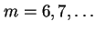
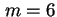

ถ้านักศึกษาต้องการใช้เวลาในการรอโดยเฉลี่ยน้อยกว่า 2 นาที และรอน้อยกว่า 5 นาทีมากกว่า 90 % ของการเข้าใช้ห้องปฏิบัติการคอมพิวเตอร์ จงระบุจำนวนคอมพิวเตอร์ที่ต้องการในการให้คุณภาพการบริการดังกล่าว
เราเริ่มจากการคำนวณจำนวนเครื่องบริการ  เครื่อง โดยให้อัตราการเข้าใช้งาน
และอัตราการบริการ  , ตามลำดับ
, ตามลำดับ
จำนวนครื่องบริการ  เราจะได้
| (5.30) |
| (5.31) |
| (5.32) |
| (5.33) |
90-Percentile ของเวลาที่รอรับบริการเท่ากับ
| (5.34) |
ดังนั้นเพิ่มเครื่องบริการอีกหนึ่งเครื่องจะเพียงพอต่อความต้องการของนักศึกษา